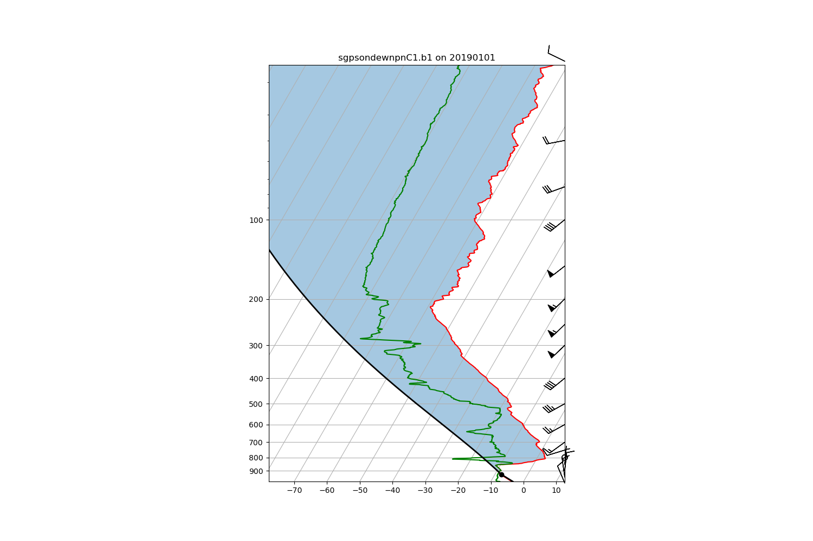

Note
Click here to download the full example code
Example on how to plot a Skew-T plot of a sounding¶
This example shows how to make a Skew-T plot from a sounding and calculate stability indicies.
Out:
/home/travis/miniconda3/envs/testenv/lib/python3.7/site-packages/metpy/interpolate/one_dimension.py:147: UserWarning: Interpolation point out of data bounds encountered
warnings.warn('Interpolation point out of data bounds encountered')
<xarray.DataArray 'lifted_index' ()>
array(28.46395777)
Attributes:
units: kelvin
long_name: Lifted index
/home/travis/build/ARM-DOE/ACT/act/plotting/plot.py:85: UserWarning: Could not discern datastreamname and dict or tuple were not provided. Using defaultname of act_datastream!
"name of act_datastream!"), UserWarning)
import act
from matplotlib import pyplot as plt
# Read data
sonde_ds = act.io.armfiles.read_netcdf(
act.tests.sample_files.EXAMPLE_SONDE1)
# Calculate stability indicies
sonde_ds = act.retrievals.calculate_stability_indicies(
sonde_ds, temp_name="tdry", td_name="dp", p_name="pres")
print(sonde_ds["lifted_index"])
# Set up plot
skewt = act.plotting.SkewTDisplay(sonde_ds, figsize=(15, 10))
# Add data
skewt.plot_from_u_and_v('u_wind', 'v_wind', 'pres', 'tdry', 'dp')
sonde_ds.close()
plt.show()
Total running time of the script: ( 0 minutes 0.902 seconds)